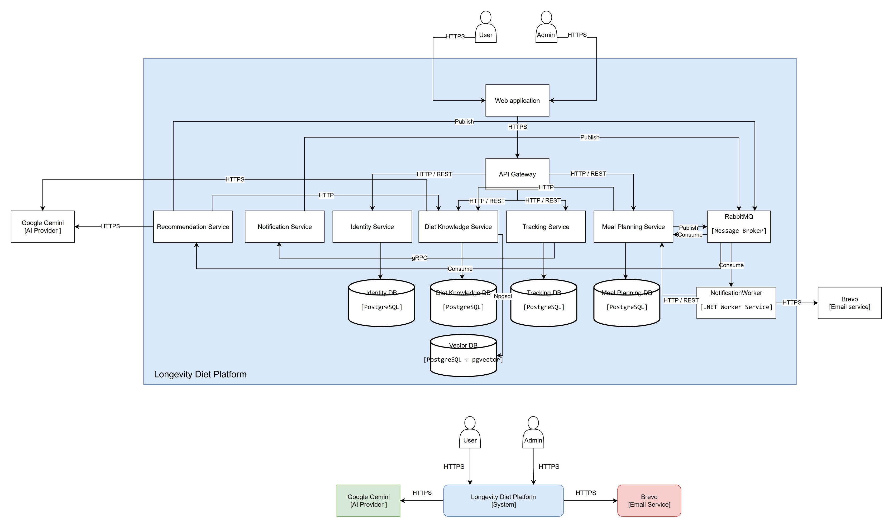
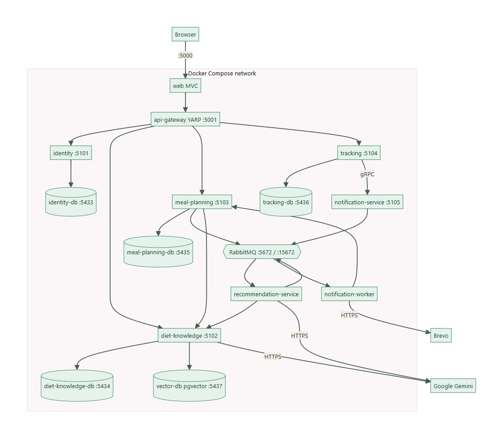
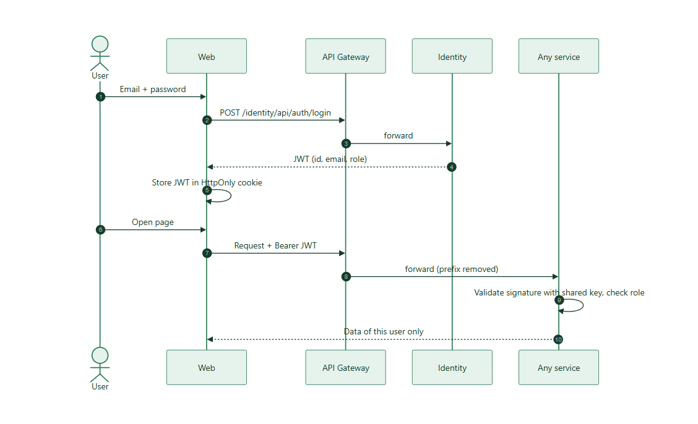
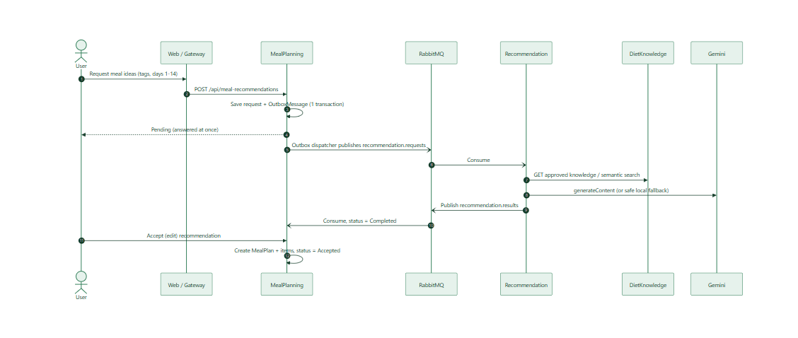
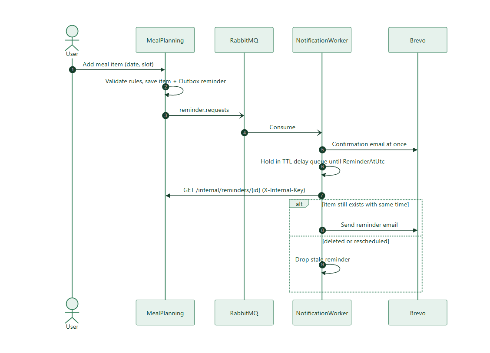
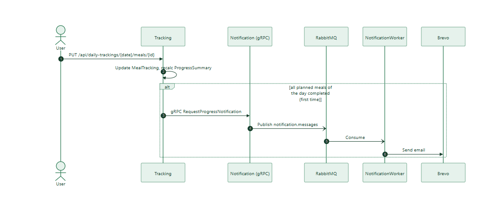
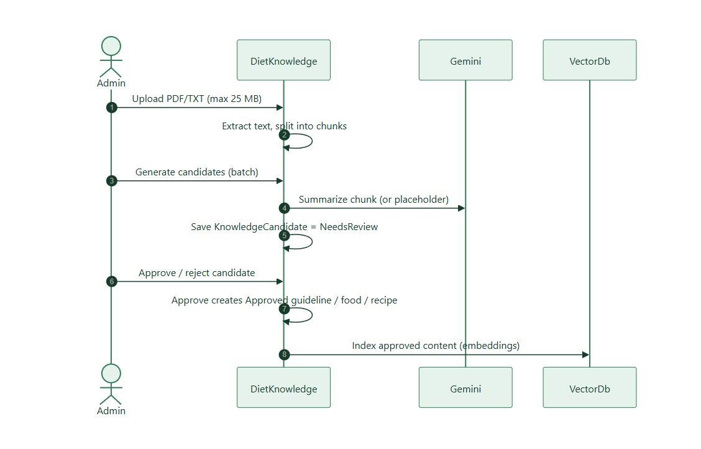

| Document | Architecture Description |
| Version | 1.0 (2026-11-12) |
| Editable source | diagrams/C4-Architecture.drawio |
The platform follows a microservice architecture. Public traffic enters through one API Gateway; four business services each own a PostgreSQL database; slow or optional work is moved to RabbitMQ consumers; one synchronous internal call uses gRPC.
| Style | Used for | Why |
|---|---|---|
| HTTPS | Users → Web, Web → Gateway (target), Gemini, Brevo | Protect data in transit over the Internet |
| HTTP / REST | Gateway → services, Meal Planning → Diet Knowledge, Recommendation → Diet Knowledge, Worker → Meal Planning | Normal synchronous calls behind the gateway |
| gRPC | Tracking → Notification | Typed contract (.proto), fast internal call |
| RabbitMQ | Reminders, AI requests/results, notification emails | Sender does not wait; work survives a consumer outage |
| Container | Responsibility | Data |
|---|---|---|
| Web (MVC) | UI, session, English/Vietnamese | — |
| API Gateway (YARP) | Single entry, prefix routing, blocks /internal/ | — |
| Identity | Accounts, roles, JWT, preferences | IdentityDb |
| Diet Knowledge | Guidelines, foods, recipes, regimens, book review, semantic search | DietKnowledgeDb, VectorDb |
| Meal Planning | Plans, items, reminder outbox, AI requests | MealPlanningDb |
| Tracking | Daily tracking, progress, diet tracking, gRPC client | TrackingDb |
| Recommendation | Builds AI context from approved data, calls Gemini, publishes result | stateless |
| Notification (gRPC) | Receives progress requests, publishes messages | stateless |
| Notification Worker | Consumes messages, delays reminders, sends email via Brevo | stateless |
| RabbitMQ | Message broker | queues |


| Exchange | Queue | Routing key | Publisher | Consumer |
|---|---|---|---|---|
| longevity.reminders | reminder.requests | reminder.requested | Meal Planning (outbox) | Notification Worker |
| longevity.recommendations | recommendation.requests | recommendation.requested | Meal Planning (outbox) | Recommendation |
| longevity.recommendations | recommendation.results | recommendation.completed | Recommendation | Meal Planning |
| longevity.notifications | notification.messages | notification.requested | Notification (gRPC) | Notification Worker |
All queues are durable and have dead-letter queues; consumers retry up to 3 times with a 5 s delay. Reminder delay queues use TTL (30 s near the time, 1 h far from it).
| Layer | Contains | May depend on |
|---|---|---|
| API | Controllers, request/response contracts, authentication entry, Program.cs | Application |
| Application | Business services, rules, abstractions (interfaces), commands/models | Domain |
| Domain | Entities | nothing |
| Infrastructure | DbContext, repositories, RabbitMQ / HTTP / gRPC clients, seeding, migrations | Application, Domain |
LongevityDiet.ApiDefaults; message contracts in LongevityDiet.Contracts.



